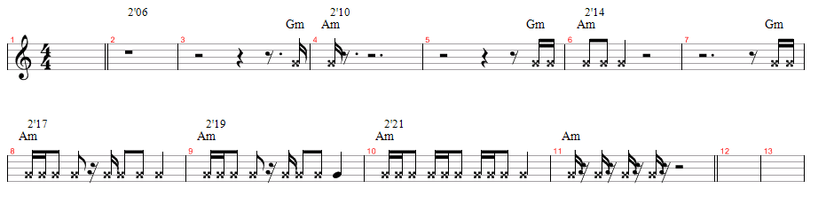

關於樂團總譜
發布日期：0001-01-01
在 “怎樣練一首歌” 以及 “樂團經營” 提到段落的問題. 樂團是一個 “團體”, 音樂是時間藝術, 成員在練習時就要有共同的時間軸參考標示 (Marker/Tag), 溝通時就用 Tag 溝通, 協調. 盡量用通用的術語, 或者英文, 因為搞不好有機會跟老外合作搭歌. (聽聽陶喆跟老外工作時的對話)
樂手進錄音室錄音之前, 通常錄音師和編曲會先準備好所謂的 “工作帶”, 內容大概就是有 Click, 鼓, Bass, 和弦 (GT or KB), 讓錄音的樂手知道現在在哪裡, 情緒如何. 但是在練團室並沒有這些東西, 所以最好把斷落標示弄清楚. 練團室鼓手就是 Click.
常見的溝通狀況
以下是在練團時經常出現的一些狀況:
狀況一:
Vocal: 剛剛拍子錯了, 從 2:32 那邊, 我們再來一次.
GT: 你貢啥?? (你說哪裡????)
其他人: ???????????????
你覺得有人會知道 2:32 是哪裡嗎？通常接下來，有人就會拿出 MP3 Player，然後準備用 Micphone or 接到 Mixer 放給大家聽。然後可能的問題就是：在那邊找 2:32 找半天，或者找線接到 Mixer 接半天，無法放出聲音，或者太小聲，然後已經過了十分鐘了。。。你覺得這樣的溝通有效率嗎？
狀況二:
Vocal: 我們從 "你給我小雨滴 滋潤我心窩" 這裡句開始.
All: ?????????????
不要說歌詞哪句開始, 有些樂手連現在正在練的歌叫啥都不曉得了, 即時那個歌可能在市場上是很有名的. 不要以為很誇張, 這很常遇到, 通常當歌累積幾百首之後, 只要稍微不專注一下子, 很容易就會變成像是在 “跑龍套” 的局面.
狀況三:
GT: 從剛剛那個 G#7 進去開始, 然後最後 b6 -> b7 -> 1 結束.
KB/Bass: 好.
Drum, Vocal: Is good to drink????
狀況四:
Drummer: 剛剛那邊 "咚咚 鏗 咚咚 鏘", 拍子錯了, 吉他要 "嗯 搭" 才出來 ....
GT: ...................
鼓手是負責樂團的節奏部分，對於節奏的形容，以及專業術語，應該更能夠清楚描述才是。
狀況五:
Vocal: 我們從 GT Solo 那邊開始.
GT: Solo 有三段, 你是說哪一段 ????
Vocal: 就是 "搭搭搭 搭搭搭" 那邊阿 ..
GT OS: 三段一開始都是 "搭搭搭 搭搭搭" .......................................
狀況六:
GT: 從最後 Solo 前那一段開始.
Drummer: 嗯嗯 ...
KB: 好.
Vocal: 啥@@?
調整溝通方法
以上幾種狀況, 看起來有點好笑, 又有點蠢. 可是卻是練團時常發生的. 如果改成以下這樣:
狀況一:
KB: 剛剛間奏一 (Interlude 1) 吉他彈錯了, 我們再來一次.
狀況二:
Vocal: 我們從第一次副歌 (Chorus) 開始.
狀況三:
GT: 從剛剛間奏一 (Inter 1) 的最後一小節進去.
狀況四:
Drummer: 剛剛的進副歌 (Chorus) 的 Fill-in 那邊, 拍子錯了, 吉他要第一拍的反拍才出來 ....
狀況五:
Vocal: 我們從第二次的 GT Solo 開始, 然後接副歌.
狀況六:
GT: 從 Outro 前的 Chorus 開始再一次.
如果用這些名詞來表示段落, 而你卻還不知道該彈什麼, 那表示你可能:
- 歌聽的不夠熟, 聽的不夠專心
- 視奏要多加強
- 把歌聽進去, 不要連啥是主歌/副歌/前奏/間奏/尾奏都搞不清楚.
常見的段落名詞, 依據歌曲的性質, 曲風, 會有不一樣的適用性, 在 “怎樣練一首歌” 有詳細的說明.
寫譜的問題
要寫級數還是寫和弦名稱？
這個部分我個人會看歌曲的曲風, 一般我個人是這樣做的:
流行歌: POP, Ballad, POP Rock, R&B … 都用大調的數字級. ex: 1, 2m, 3m, 7o … etc. 小調也參考大調, 用 6m 開始. 簡言之, 台灣卓著出版的譜就是這樣. 但是如果該曲子的編曲和聲比較複雜, 通常是應用了爵士和聲, 我就會寫和弦名稱, 像是 Misia - Everything.演奏曲: 通常就是一些 Jazz, Fusion, 古典之類的演奏曲, 這些我也會整理整個歌曲的 overview, 但是就會直接寫和弦名稱, 大概就像歌曲分析: Falling in Love Again, Memories of Lightwave 那樣.
雖然會這樣分, 但是有的時候一首歌, 會因為需求 (教學/數字和弦譜/調性譜/五線譜/簡譜/改編/簡易), 我會寫三四個以上的版本, 端看需求來定.
如果你連標題都不知道是什麼問題，那可能要回去好好練習看譜。
鼓譜怎麼辦?
有些段落的節奏比較複雜, 可以把節奏標記上去. 像是黃小琥熱情的沙漠間奏, 節奏如下圖:

要寫主旋律嗎?
如果有時間, 有工具, 能寫最好. 一般流行歌寫簡譜比較適合.
樂團譜的種類
樂團總譜 (數字): 通常只有幾頁, 最多不超過四頁 A4, 譜上只會著名和弦, 一些插音 (Fill), 過門節奏, 特殊的和聲聲線會額外著名. 通常是現場表演在看的, 卓著出版的譜就是. 這種譜都是大調中心譜, 所以寫的級數都是大調級數.團譜: 有各個樂器很詳細的內容, 吉他六線譜, 詳細演奏表情, 鍵盤五線譜, 鼓和 Bass 譜 …. 適合自己練習用. 如果是各個聲部是拆開的, 那或許還可以帶去練團室; 如果是和在一起的, 請不要帶這個去練團室, 因為大家是去練團室一起合奏練習的, 不是要看你在那邊表演找譜大戲.
有沒有哪些推薦的寫譜工具？
我個人有在使用的一些製譜軟體, 用途不一, 有些要錢, 有些則不.
- iReal Pro: 專門用來練習即興的工具，在 Mac/iOS/Android 裡都有，現在是我寫總譜/練即興/創作的主要工具。
- Guitar Pro: 主要的強項是吉他譜, 第六版有把 “樂團團譜” 的功能作提升
- Finale / Sibelius: 非常專業的排版, 製譜工具.
- LilyPond: 也是一套非常專業的排版, 製譜工具, 而且是免費的. 但不是 WYSWYG 的製譜工具, 他是類似於 LateX 的直譯程式 (有點像 Python). 功能非常強大, 排版出來的也非常漂亮.
- Open Office Calc: 就是類似 Microsoft 的 Excel, 用 Calc 主要是好排版. 我主要用他來寫團譜 / 和弦譜, 通常限制不要超過兩張 A4 的數量. 最後的例子就是用這個打的 XD
- 手: 呃 … 就是用手寫 XDD
如果還有其他不錯的工具, 歡迎大家推薦.
※ 版權所有，謝絕轉載，請尊重著作權法 ※
結論
寫譜是很累而且很消耗精神的工作, 特別是要校對/修改的譜. 但是一個團如果真的有心要做歌, 這只是練團的基本功, 有的時候因為需求或者改編, 一首歌寫三四個版本是很正常的, 但是累積起來的功力, 都是貨真價實的, 鏗鏘老師都這樣做了, 你呢?
以下是我個人在練團時所寫的總譜, 寫譜基本的原則就是文章的描述, 歌曲是 Sixx AM - Life is Beautiful:


延伸閱讀
站內資料
- 怎樣練一首歌
- 樂團經營
參考資料
- [簡報] 拿音樂比音效? 鏗鏘批金鐘不倫不類!
- D6T9 Session - 陶喆 69 樂張專輯製作
更新紀錄
- 2011/01/15: 初版
- 2011/08/14: 增加黃小琥 - 熱情的沙漠間奏節奏譜
- 2011/09/25: 增加總譜例子 - Sixx AM: Life is Beautiful
- 2015/04/13: 增加工具 iReal Pro
- 原文位址：https://rickmidi.blogspot.com/2011/01/blog-post.html